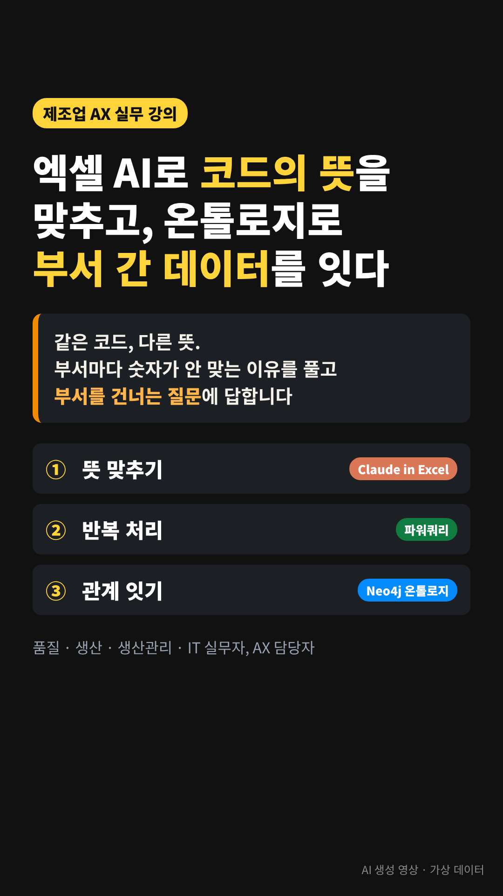

주력 과정
제조 데이터 표준화와 온톨로지
같은 코드, 다른 뜻. 부서마다 다른 숫자가 나오는 이유를 풀고, 부서를 건너는 질문에 답합니다.
- 1뜻 맞추기 · 엑셀 AI가 코드의 뜻을 비교
- 2반복 처리 · 파워쿼리로 매달 새로 고침 한 번
- 3관계 잇기 · 온톨로지로 부서 간 질문에 답
개인정보와 기밀은 가리고 AI에 넘기는 마스킹·치환 실습 포함
강의 제안서 보기 →